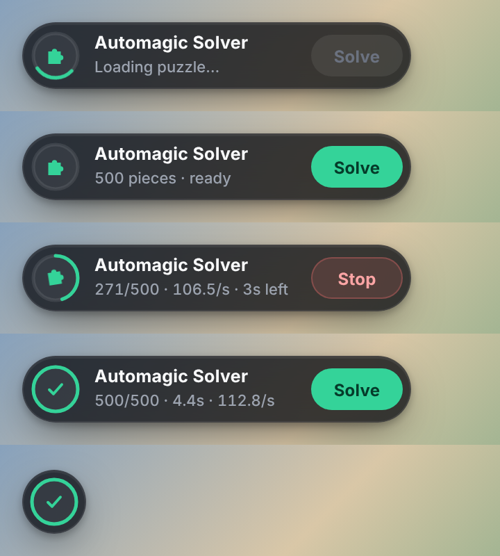

1. Overview
Jigidi Automagic Solver is a userscript that solves jigsaw puzzles on jigidi.com automatically. The script reads where every piece belongs directly from the game's own drawing code, then drags the pieces into place one by one with synthetic mouse events. No image recognition is needed.
The script, this documentation and the install page live on GitHub: https://github.com/knutos/jigidi-solver. The install page is https://knutos.github.io/jigidi-solver/en.html.
2. Installing and updating
The script needs a userscript extension in the browser, for example Tampermonkey or Violentmonkey.
- Install the extension from your browser's extension store.
- Open the install page (https://knutos.github.io/jigidi-solver/en.html) and press Install. The extension then shows an install dialog.
- Confirm the installation. The script runs automatically on puzzle pages on jigidi.com.
Important: The script must run at document-start and in the page context (@inject-into page), otherwise it cannot hook into the game before the game starts. If you have another Jigidi extension enabled (e.g. "Bingo Solver"), turn it off.
2.1 Updating
- Automatically: Tampermonkey and Violentmonkey check GitHub for new versions regularly (via
@updateURL) and update the script themselves. - Right away: Open the install page. It shows which version you have installed and which is the newest. If there is a newer version, press Update.
- From the extension: In Tampermonkey: Dashboard → select the script → "Check for updates".
The install page can only see the installed version if the extension is allowed to run the script on that page. There, the script does nothing except report its version.
2.2 iPad and iPhone (Safari)
Safari on iPad and iPhone can run userscripts with the Userscripts app (free on the App Store). Tampermonkey is also available for Safari and works the same way as on a computer.
- Install Userscripts from the App Store and open the app once. Choose a folder for the scripts (e.g. a folder called "Userscripts" in iCloud Drive).
- Turn on the extension: Settings → Safari → Extensions → Userscripts (on newer iPadOS: Settings → Apps → Safari → Extensions). Give it access to jigidi.com, or to all websites.
- Open the install page in Safari and press Install. The script opens as text. Tap the
</>icon in the address bar and choose install. - Open a puzzle on jigidi.com. Tap the
</>icon and check that Jigidi Automagic Solver is turned on.
To update on iPad: open the install page and install again the same way. The panel works as on a computer: press Solve, press Stop to cancel (Esc only works with a keyboard), drag the panel with your finger, and tap the ring to minimise it.
2.3 Android
Chrome for Android does not support extensions. Use Firefox with Violentmonkey, or Microsoft Edge with Tampermonkey. Android has not been tested yet.
- Install Firefox from Google Play.
- In Firefox: menu (⋮) → Extensions → find Violentmonkey and tap Add. Tampermonkey is also available for Firefox on Android.
- Open the install page in Firefox and press Install. Violentmonkey shows the script; tap Install / Confirm.
- Open a puzzle on jigidi.com in Firefox and press Solve.
With Edge: menu → Extensions → add Tampermonkey, then install the script from the install page the same way. The panel works as on iPad: drag it with your finger, tap the ring to minimise it, and press Stop to cancel. Violentmonkey and Tampermonkey update the script automatically, as on a computer.
3. Usage
The control panel is a small dark "pill" in the bottom-left corner. On the left is a ring that shows progress, in the middle the status, and on the right a button. The picture shows the panel in its different states:

Panel states, from the top: loading, ready, solving, done and minimised.
3.1 Solving a puzzle
- Open a puzzle on jigidi.com. While the pieces load, the ring spins and the button is grey ("Loading puzzle…").
- When the panel shows "N pieces · ready", press Solve.
- While solving, the ring fills up as pieces are placed, and the status line shows for example "271/500 · 107.0/s · 3s left": pieces placed, pieces per second and estimated time left.
- The button turns red and says Stop. Press it, or press Esc, to cancel. Pieces already placed stay where they are.
- When the script is done, the panel shows the number of pieces placed, the time taken and pieces per second.
3.2 Colours and symbols
| State | Looks like | Meaning |
|---|---|---|
| Loading | Spinning ring, grey button | The pieces are not fully registered yet. |
| Ready | Green "Solve" button | The puzzle has been recognised and can be solved. |
| Solving | Ring fills up, red "Stop" button | Solving is in progress. Real mouse input to the game is blocked. |
| Done | Green check mark, full ring | All pieces are in place. |
| Partial | Yellow colour | Solving was stopped, or some pieces failed. |
| Error | Red colour and an error message | See chapter 7. |
3.3 Moving and minimising the panel
- Move: Drag the panel anywhere on the screen. It always stays inside the window.
- Minimise: Click the ring to shrink the panel to just the ring. Click again to show the whole panel. The ring keeps updating while minimised, and hovering over it shows the status as a tooltip.
- Remembered: Position and minimised state are saved in the browser (the
jas-uikey in localStorage) and restored next time.
While the script works, real mouse, pointer and touch events to the game are blocked, so you cannot move pieces by accident. The panel itself can still be used. The panel lives in its own Shadow DOM, so Jigidi's style sheets cannot affect how it looks.
4. How it works
4.1 Hooks
When the page loads, the script replaces a few built-in browser functions with its own versions that record data and then call the original. All information is stored in the global object window.__jas.
| Function | What the script captures |
|---|---|
addEventListener | All mouse, pointer and touch listeners the game registers, so the script can call them directly. |
iframe.contentWindow | Also hooks addEventListener inside iframes, so the game cannot get around the hooks by fetching a "clean" copy of the function from an iframe. |
removeEventListener | Removes listeners from the list again, so the script never calls stale listeners. |
setPointerCapture | Emulates pointer capture for the script's own pointer events. Without this the browser would throw an error, because there is no real active pointer. |
putImageData | Marks that a new piece is being cut out on the game's scratch canvas. |
drawImage | Three cases: (1) the source offset of the piece in the original image, (2) which canvas holds which piece, (3) where the piece is drawn on screen (position, scale, centre). |
Because Jigidi cuts the pieces in solution order (row by row), the order and the source offsets together give the complete solution.
4.2 The solver
When you press Solve, the solver goes through these steps:
| Step | Description |
|---|---|
| Recognition | Reads the dimensions from the text "(columns × rows)" on the page and checks that the count matches the number of pieces cut out. |
| Zoom | Zooms out with the "−" button until the finished puzzle takes up less than half of the board, less than 75 % of its width, and fits in height. If it still does not fit, the script stops with a message. |
| Continue | If there is already an assembled part (from an earlier run or placed by hand), the script builds on the largest one. If it lies partly off the board, the spot it will move to is cleared first, and then the whole part is dragged in. |
| Choose anchor | Otherwise the script tries every piece as a fixed starting point, and picks the one where the finished puzzle fits on the board and the fewest loose pieces lie in the target area. The anchor piece is not moved. |
| Place pieces | Places the pieces in breadth-first order outward from the anchor, so every piece is dropped next to a neighbour already in place and snaps on the first try. |
| Clear as it goes | Just before a piece is placed, loose pieces lying on or right next to its spot are moved away, topmost first. If such a piece can already go to its own spot (it has a placed neighbour), it is placed there directly. Otherwise it is parked outside the target area. |
| Retry | Pieces that failed are tried again in a new round (2 rounds by default, up to 12 attempts per piece). |
| Count | Finally counts how many pieces actually sit correctly relative to their neighbours. |
4.3 Wrong grabs and correction
- Grab point: The script grabs the middle of the piece, not a transparent corner. If the middle is covered by a piece lying on top, up to eight other points are tried.
- Wrong piece moved: If a loose piece is moved by mistake, it is parked outside the target area.
- Finished part moved: If the assembled puzzle is moved by mistake, it is dragged straight back.
- Lucky snap: If a piece snaps into place on its own, it is recorded as placed.
4.4 Input mode
Jigidi comes in several variants that take input in different ways. At the start of every solve, the script checks which listeners the game has registered and chooses a mode automatically:
| Mode | When it is used | How the script drags pieces |
|---|---|---|
mouse | The game has a mousedown listener on the board (the original variant). | mousedown on the board, mousemove on the document, mouseup on the window. |
pointer | The game uses only pointer events, e.g. on a DIV element around the board. | pointerdown, pointermove and pointerup are sent through the script's own event dispatcher that mimics the browser: hit testing, capture, target and bubble phases, stopPropagation and pointer capture. Handlers set as properties (onpointerdown = …) are called too. |
native | The script knows none of the game's listeners, e.g. because it was loaded too late. | Real events are sent with dispatchEvent: pointer events and then mouse events, the way the browser does. Works as long as the game does not require isTrusted. |
If the game does not react to three drags in a row, the script tries the other modes before slowing down. This only happens while no mode has worked yet. Once a mode has moved pieces, it is kept for the rest of the solve, and also the next time you press Solve on the same page. The script's own panel listeners are ignored.
The chosen mode is written to the browser console as "[Automagic Solver] input mode: pointer" (or mouse / native). The zoom button is found by id, label or a lone "−", and is pressed first through known listeners and then with ordinary browser events. The mouse wheel is not used, because it may pan the board instead of zooming.
5. Speed levels
The script starts at the fastest level and automatically drops one level if drags repeatedly move nothing. The panel then shows "Switching to speed level …".
| Level | Method | Typical time per drag |
|---|---|---|
| 0 | The whole drag is sent in one synchronous burst (down, one move, up). The wait afterwards adapts to the game, see below. | about 2–25 ms |
| 1 | One screen refresh (animation frame) between each event. | about 80–120 ms |
| 2 | The original timed method from 1.4.1 (fixed pauses). | about 170 ms + |
5.1 Wait mode
At level 0, the script measures over the first eight drags how long the game needs to draw the result, and then picks the fastest wait mode that never missed a change:
| Wait mode | When it is chosen | Wait after each drag |
|---|---|---|
sync | The game redraws the board as soon as the piece is dropped. | None. |
f1 | The game redraws on the next screen refresh. | One screen refresh (about 17 ms at 60 Hz). |
full | The game animates the pieces over several screen refreshes. | Until nothing moves any more. |
If the script still sees a change after it stopped waiting (three times), it moves to the next, safer mode. The chosen mode is written to the browser console as "[Automagic Solver] wait mode: sync". In a hidden tab, waiting falls back to a 60 ms timer.
Measured on a test copy of the game with 300 pieces, version 1.6.1 took about 15 seconds. From version 1.7.0 it takes about 1.4 seconds when the game redraws immediately, and about 7 seconds when it redraws on the next screen refresh. How fast it is on jigidi.com depends on how the game draws and on the refresh rate of your screen.
6. Settings
Settings are passed as an object to __jas.solve(). The panel uses the defaults, but you can call the solver directly from the browser console:
await __jas.solve({
level: 1, // start at level 1 instead of 0
maxTries: 20,
log: console.log,
});| Setting | Default | Meaning |
|---|---|---|
level | 0 | Starting speed level (0–2). |
wait | 'cal' | Wait mode at level 0: cal (measure automatically), sync, f1 or full. |
stepDelay | 12 | Pause in ms between events at level 2. |
moveSteps | 5 | Number of mouse moves per drag at level 2 (level 0 uses 1, level 1 uses 2). |
settle | 60 | Extra pause in ms after dropping at level 2. |
margin | 20 | Distance in canvas pixels from the board edge to the target area. |
maxTries | 12 | Maximum attempts per piece per round. |
passes | 2 | Number of rounds over pieces not yet placed. |
log | – | Function that receives status messages. |
stop | – | Function that returns true when the solver should stop. |
onProgress | – | Called after each piece with (placed, total, ok). |
The return value is an object: { placed, total, stopped, level, wait }, where level is the speed level and wait the wait mode the solver ended up with.
7. Error messages and troubleshooting
| Message / symptom | Cause and fix |
|---|---|
| Loading puzzle… (ring keeps spinning) | The pieces have not been drawn yet. Wait, or reload the page. If it stays like this, the script probably did not run at document-start – check the extension's settings. Also turn off other Jigidi scripts (e.g. "Bingo Solver"). |
| Still loading… | Not all pieces are registered yet. Wait a moment and press Solve again. |
| Puzzle not recognized | The text "(columns × rows)" was not found, or it does not match the number of pieces. Jigidi may have changed the page layout. |
| Puzzle too small | Puzzles with only one row or column are not supported. |
| Game board not found | The game's canvas (wider than 200 pixels) was not found. |
| Switching to speed level … | Not an error: the game needs slower input, and the script adapts. |
| The game ignores the solver's input | Eight drags in a row at the slowest speed moved nothing, so the script stopped instead of trying forever. Jigidi has probably changed how the game takes input. See the browser console for the chosen mode (section 4.4). |
| The game ignores the solver's input – the script was injected too late | The userscript extension loaded the script after the game had started, and the game does not accept events that do not come from a real mouse. Reload the page. If it happens again: in Tampermonkey, set Settings → Config mode "Advanced" → Experimental → Inject Mode to "Instant" (if available). |
| The puzzle doesn't fit on the board | The script could not zoom out far enough. Press "−" in Jigidi until the whole puzzle fits, and press Solve again. |
| Could not move the assembled part onto the board | The assembled part lies off the board and could not be dragged in. Drag it in yourself and press Solve again. |
| The panel is yellow after solving | Some pieces were not placed, or you stopped solving. Press Solve again to continue. |
| The panel does not appear on iPad | Check that the Userscripts extension has access to jigidi.com, and that the script is turned on under the </> icon. Reload the page. |
| The panel is gone | It may have ended up off-screen after the window was resized. Delete jas-ui in localStorage and reload the page. |
| The install page says "not found" | The extension does not run the script on the install page (e.g. Userscripts without access to github.io). The script may still be installed; check the version in the extension. |
| Many "FAILED" pieces | Try __jas.solve({ wait: 'full' }) from the console. If that does not help, try starting at level 1 or 2, or increase maxTries. Also check whether the pieces are rotated – rotation is not supported. |
8. Limitations
- Rotation: Puzzles with rotated pieces are not supported.
- Depends on how Jigidi is built: The script assumes that pieces are cut in solution order on a 2D canvas, that there is a zoom button ("−") and that the dimensions appear as "(c × r)" on the page. If Jigidi changes any of this, the script stops working until it is updated.
- WebGL / Web Workers: If Jigidi draws with WebGL or OffscreenCanvas in a worker, the hooks see nothing.
- Detection: Very even, straight and fast drags are clearly different from human use. If Jigidi logs timing or movement patterns on the server, solves by the script can be detected. Higher speed makes this signal clearer.
- Terms of use: Using automation may be against Jigidi's terms. You are responsible for your own use.
9. Changelog
Version 1.8.1
- New home: https://github.com/knutos/jigidi-solver. Automatic updates now come from there.
- New install page (https://knutos.github.io/jigidi-solver/) with an install/update button, version check and documentation, in Norwegian and English.
- The script reports the installed version on the install page, and does nothing else there.
- The documentation is built from one source into both PDF and web page.
- Install guide for Android (Firefox with Violentmonkey, or Edge with Tampermonkey). Not tested on Android yet.
Version 1.8.0
- Fixed: large puzzles stopped halfway. Zoom did not work on newer Jigidi, so the finished puzzle did not fit, and pieces had to be placed off the board.
- The zoom button is now found even without a known id, and is pressed with ordinary browser events when the listeners are unknown.
- Removed the mouse wheel as a zoom fallback; it could pan the whole board.
- Checks before starting that the puzzle fits, and gives a clear message if not.
- Builds on an already assembled part, and moves it onto the board if needed (after clearing the space).
- Tested on iPad with Safari, and on a copy of the game with 594 pieces (27 × 22) that has to be zoomed out: done in about 7 seconds.
Version 1.7.2
- Fixed: solving could stop halfway with "The game ignores the solver's input". After a few random drags with no effect, the script switched away from an input mode that worked, and never came back to it.
- A mode that has moved pieces is now kept for the rest of the solve and for the next Solve on the same page.
Version 1.7.1
- Fixed: "The game ignores the solver's input" when the script did not capture the game's listeners. The script's own panel listeners were wrongly taken for the game's, so the wrong mode was chosen.
- New "native" mode that sends real events with dispatchEvent when the game's listeners are unknown.
- Support for handlers set as properties (onpointerdown = …).
- Hooks inside iframes too, so a "clean" addEventListener from an iframe does not bypass the script.
- Tries the other modes automatically before lowering the speed.
- Console warning when the script was loaded too late.
Version 1.7.0
- Adaptive wait mode (sync / f1 / full): the script measures how fast the game draws, and waits no longer than needed.
- Automatic downgrade to a safer wait mode if a change shows up too late.
- Clearing happens just before each piece is placed instead of up front. Loose pieces that can be placed are placed directly instead of being parked first.
- One mouse move per drag at level 0 (previously 2).
- New setting: wait.
- Measured on a test copy with 300 pieces: from about 15 s to about 1.4 s (game redraws immediately) or about 7 s (game redraws on the next screen refresh).
Version 1.6.1
- Support for Jigidi variants that use only pointer events. Fixed a bug where the script hung on some PCs.
- Automatic choice of input mode (mouse or pointer) on every solve.
- Emulation of pointer capture (setPointerCapture) for the script's own events.
- The script stops with a clear error message when the game does not react, instead of trying forever.
Version 1.6.0
- New name: Jigidi Automagic Solver (previously Jigidi Auto Solver).
- New compact control panel: progress ring, time estimate and pieces per second while solving.
- Colour-coded status (green, yellow, red) and a check mark when the puzzle is done.
- The panel can be moved and minimised. Position and state are remembered.
- Esc stops solving.
- The panel lives in a Shadow DOM and is not affected by Jigidi's style sheets.
Version 1.5.0
- Adaptive waiting after each drag (screen refresh + movement detection) instead of fixed pauses.
- Three speed levels with automatic step-down.
- Smart choice of anchor piece, so the puzzle is built where the fewest loose pieces already lie.
- Grab point in the middle of the piece, avoiding pieces lying on top.
- Breadth-first order outward from the anchor.
- Caching of the game's canvas and event listeners; fewer status updates.
- Zoom waits for the board to stand still instead of a fixed 600 ms.
Version 1.4.1
The starting point: "Jigidi Auto Solver" by WorlockM, with fixed timed drags and the build area at the top left.